Overhaul
Disassembly
1. Disconnect the M-terminal (A) on the magnet switch assembly.
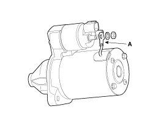
2. After loosening the 2 screws (A), detach the magnet switch assembly (B).
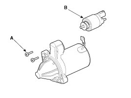
3. Loosen the brush holder mounting screw (A) and the trough bolts (B).
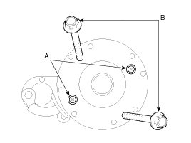
4. Remove the rear bracket (A) and brush holder assembly (B).
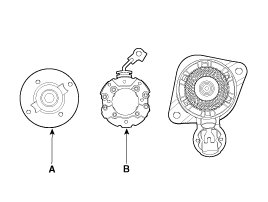
5. Remove the yoke (A).
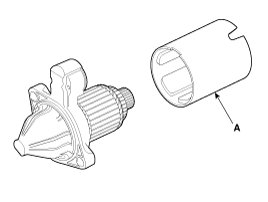
6. Remove the packing (A), lever plate (B), lever (C), armature (D).
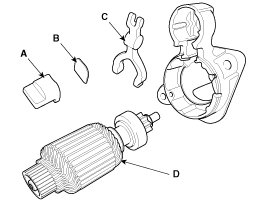
7. Press the stopper (A) using a socket (B).
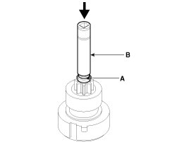
8. After removing the stop ring (A) using stopper pliers (B).
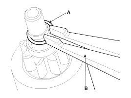
9. Remove the stop ring (B), stopper (A), over running clutch (C) and armature (D).
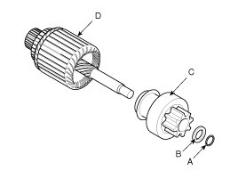
CAUTION:
- Using a suitable pulling tool (A), pull the over running clutch stopper (C) over the stop ring (B).
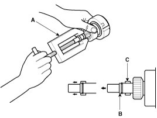
Reassembly
1. Reassemble in the reverse order of disassembly.
Inspection
Starter Solenoid Inspection
1. Disconnect the lead wire from the M-terminal of solenoid switch.
2. Connect the battery as shown. If the starter pinion pops out, it is working properly.
NOTE:
- To avoid damaging the starter, do not leave the battery connected for more than 10 seconds.
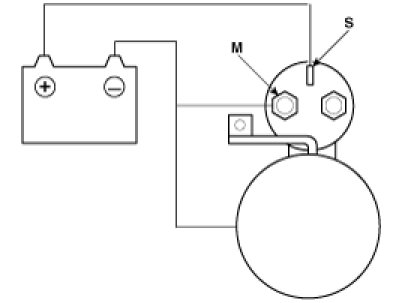
3. Disconnect the battery from the M terminal.
If the pinion does not retract, the hold-in coil is working properly.
NOTE:
- To avoid damaging the starter, do not leave the battery connected for more than 10 seconds.
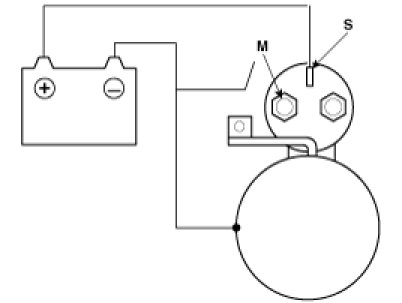
4. Disconnect the battery also from the body. If the pinion retracts immediately, it is working properly.
NOTE:
- To avoid damaging the starter, do not leave the battery connected for more than 10 seconds.
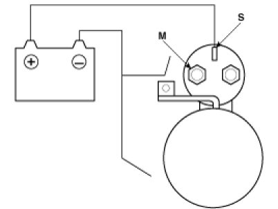
Free Running Inspection
1. Place the starter motor in a vise equipped with soft jaws and connect a fully-charged 12-volt battery to starter motor as follows.
2. Connect a test ammeter (150-ampere scale) and carbon pile rheostats shown is the illustration.
3. Connect a voltmeter (15-volt scale) across starter motor.
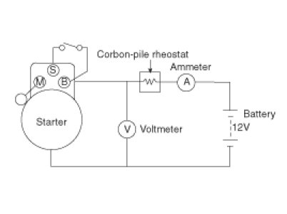
4. Rotate carbon pile to the off position.
5. Connect the battery cable from battery's negative post to the starter motor body.
6. Adjust until battery voltage shown on the voltmeter reads 11volts.
7. Confirm that the maximum amperage is within the specifications and that the starter motor turns smoothly and freely.
Armature
1. Remove the starter.
2. Disassemble the starter as shown at the beginning of this procedure.
3. Inspect the armature for wear or damage from contact with the permanent magnet. If there is wear or damage, replace the armature.
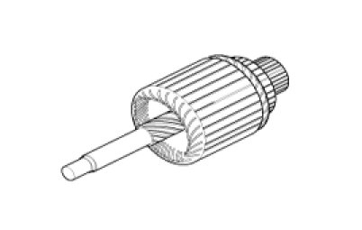
4. Check the commutator (A) surface. If the surface is dirty or burnt, resurface with emery cloth or a lathe within the following specifications, or recondition with #500 or #600 sandpaper (B).
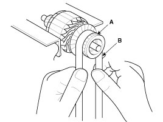
5. Check the commutator diameter. If the diameter is below the service limit, replace the armature.
Commutator diameter
Standard (New) : 29.4 mm (1.1575 in)
Service limit : 28.8 mm (1.1339 in)
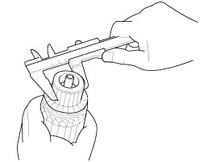
6. Measure the commutator (A) runout.
A. If the commutator runout is within the service limit, check the commutator for carbon dust or brass chips between the segments.
B. If the commutator run out is not within the service limit, replace the armature.
Commutator runout
Standard (New) : 0.05mm (0.0020in.) max
Service limit : 0.10mm (0.0039in.) max
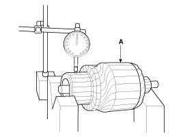
7. Check the mica depth (A). If the mica is too high (B), undercut the mica with a hacksaw blade to the proper depth. Cut away all the mica (C) between the commutator segments. The undercut should not be too shallow, too narrow, or v-shaped (D).
Commutator mica depth
Standard (New) : 0.5 mm (0.0197 in.)
Limit : 0.2mm (0.0079 in.)
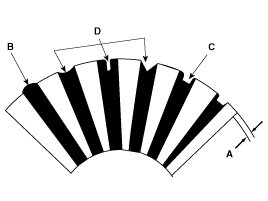
8. Check for continuity between the segments of the commutator. If an open circuit exists between any segments, replace the armature.
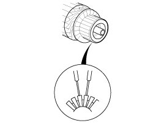
9. Check with an ohmmeter that no continuity exists between the commutator (A) and armature coil core (B), and between the commutator and armature shaft (C). If continuity exists, replace the armature.
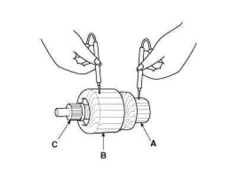
Starter Brush
1. Brushes that are worm out, or oil-soaked, should be replaced.
Brush length
Standard : 12.3 mm (0.4843 in)
Service limit : 5.5 mm (0.2165 in)
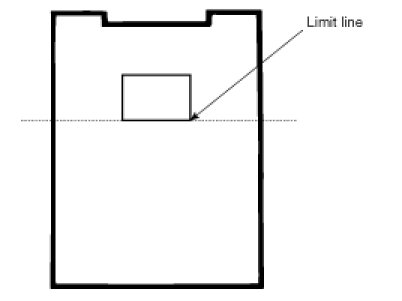
NOTE:
- To seat new brushes, slip a strip of #500 or #600 sandpaper, with the grit side up, between the commutator and each brush, and smoothly rotate the armature. The contact surface of the brushes will be sanded to the same contour as the commutator.
Starter Brush Holder
1. Check that there is no continuity between the (+) brush holder (A) and (-) plate (B).
If there is continuity, replace the brush holder assembly.
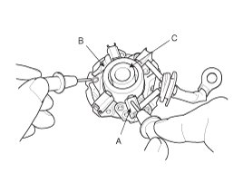
Overrunning Clutch
1. Slide the overrunning clutch along the shaft.
Replace it if does not slide smoothly.
2. Rotate the overrunning clutch both ways.
Does it lock in one direction and rotate smoothly in reverse? If it does not lock in either direction of it locks in both directions, replace it.
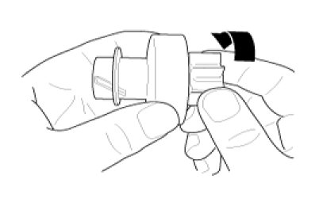
3. If the starter drive gear is worn or damaged, replace the overrunning clutch assembly. (the gear is not available separately)
Check the condition of the flywheel or torque converter ring gear if the starter drive gear teeth are damaged.
Cleaning
1. Do not immerse parts in cleaning solvent.
Immersing the yoke assembly and/or armature will damage the insulation wipe these parts with a cloth only.
2. Do not immerse the drive unit in cleaning solvent.
The overrun clutch is pre-lubricated at the factory and sol-vent will wash lubrication from the clutch.
3. The drive unit may be cleaned with a brush moistened with cleaning solvent and wiped dry with a cloth.